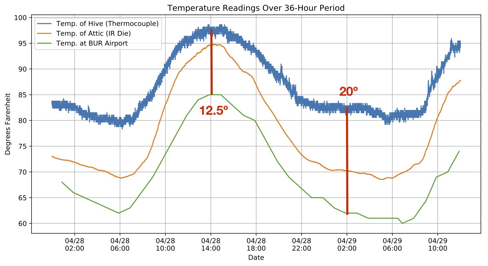
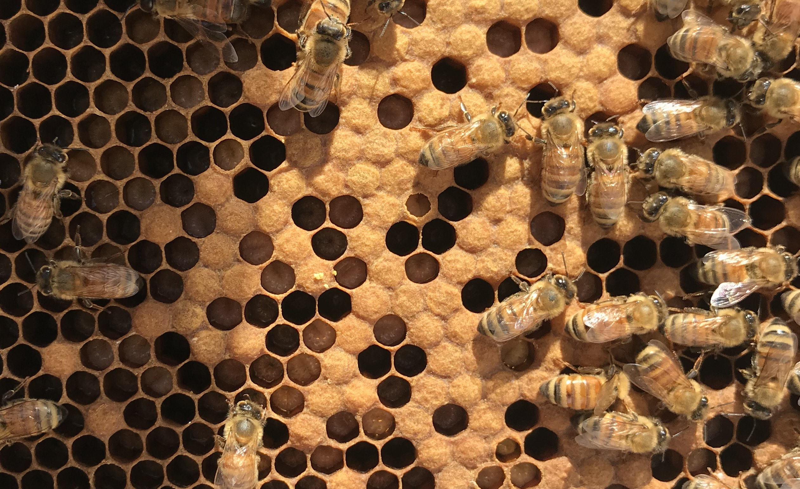
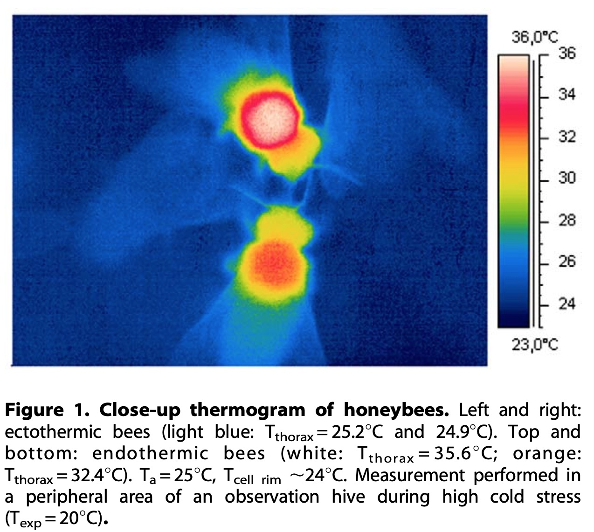

Hive Temperature Analysis
Here is what the initial data looks like from my small hive monitoring setup:

As you can see, the TMP006 produces two readings: object temperature (the reading from the surface the thermopile is pointed at) and die temperature (the temperature from the die itself). For more info see the TMP006 user guide.
The large spike on 4/24 was due to the hive being in direct sunlight. The night of the 24th, we placed shade covers over the hives to prevent them from overheating. This clearly made a difference.
Potential Evidence of Thermoregulation
Here’s a plot showing the hive temperature, the attic temperature, and the temperature at Burbank Airport (from Weather Underground) over a 36-hour period:

The hive’s temperature clearly rises and falls with the ambient temperature. But more interesting is the difference between the BUR temperature (green line) and the hive temperature (blue line). Notice that, at 14:00 on the 28th, the hive is ~12.5 degrees warmer than BUR, but by 4:00 on the 29th, the hive is ~20 degrees warmer. This seems to indicate that the bees regulate the internal temperature of the hive to keep it warmer.
Why do bees thermoregulate?
Bees work hard to keep the temperature of the hive just right. But why? The later-stage young, called pupae, are like little Goldilocks – they need to be kept between 33 and 36ºC (91.4 - 96.8ºF) to prevent physical and behavioral defects. Pupae develop in sealed-off cells of the honeycomb, called “capped brood cells.” Here’s a picture I took of some capped brood cells:

If these cells get too hot, workers use evaporative cooling – they splash the cells with water and fan them with their wings. If the cells get too cold, workers will vibrate their flight muscles to produce heat. Here is what the heating process looks like under a thermal camera.1

Conclusions
-
Using IR sensor for ambient temperature is bad – My hope was that the attic measurements could be used as a baseline for comparison with the inside of the hive (i.e. it would provide the ambient temperature inside a wooden box, thus accounting for any insulation that the hive boxes provide). In theory, then, the difference between the attic temperature and the hive temperature would be due entirely to bee activity. But this is not necessarily the case, due to:
-
differences in sensor properties (e.g. rate of heat absorption of the IR die vs the thermocouple) → can be fixed by using a thermocouple
-
differences in construction between the hive boxes (solid wood, painted white) and the attic (plywood top and bottom, solid wood sides, unpainted) → can be re-made
-
interactions between the attic and the hive boxes (e.g. attic absorbes most of the sunlight at noon, and heat transfer between the hive boxes and the attic) → not yet sure how this can be addressed
-
-
My sampling rate is too high – A reading every ten seconds is excessive. It’s clear that interesting events happen over the course of minute, not seconds. The BUR dataset resolution of one hour might be a little coarse, but I feel comfortable sampling every 5 minutes (30 times fewer datapoints than the current setup).